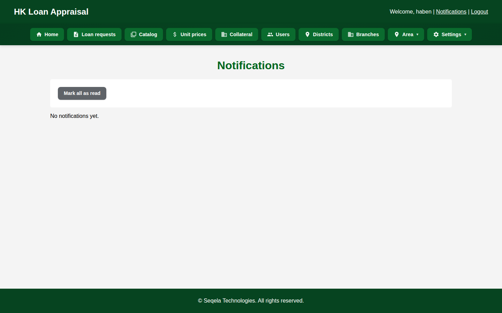
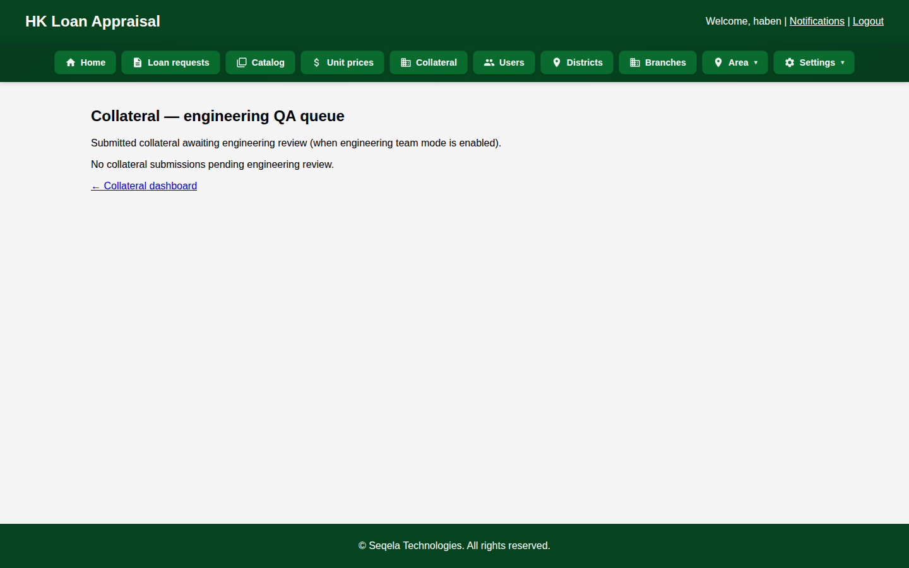

Classification: Confidential
Enclosure: Technical + financial pack
15 August 2026
Head Office
Hawelti Sub-City, Adi-Haki Street
Mekelle, Tigray, Ethiopia
Dear Members of Management,
Following DECSI’s request, we submit this technical and business proposal together with a companion financial proposal. Seqela developed the current live system for DECSI at no charge — queue, user, branch, loan-type, and collateral-type management. That system has processed 53,901 applications and approved ETB 17,025,387,000. The ETB 5 million (including VAT) licenses and deploys the new credit factory — documents/OCR, 7-step appraisal, GPS collateral, committees, Digital Apply, Seqela Market, Agentic Assist, Credit Intelligence, MFA, delegations, and post-approval through disbursement.
The platform digitizes end-to-end secured and cashflow lending: bilingual document authentication, a seven-step MSME (and corporate) appraisal wizard, GPS-governed field collateral, configurable committees, and now customer self-service and market price bands.
We propose a structured scale-up with DECSI: deepen network adoption, lock policy gates bank-wide, strengthen audit readiness, and support DECSI’s recovery and resilience agenda with a credit factory officers can run every day — not parallel Excel files.
We respectfully request management endorsement of this pack so the next phase can proceed: formal documents and presentation to the relevant committee. Commercial terms are in the companion financial proposal (SEQ/DECSI/FIN/2026-08).
Thank you for the partnership that made this system real. We look forward to scaling it with DECSI.
Yours sincerely,
For Seqela
Business Development · Credit Technology Solutions
info@seqela.com · +251 964 790 724 · seqela.com
Prepared for
DECSI
Dedebit Credit and Savings Institution S.C. · Mekelle, Tigray
AI-powered Credit Intelligence
The digital credit factory designed around DECSI’s Branch → District → HO model — cashflow MSME appraisal, GPS collateral, and committee decisioning — ready to scale network-wide.
Contents
Preceded by: Cover letter · Formal title page. Page numbers appear in the footer of this PDF.
- 1.Executive summary & the ask
- 2.Strategic fit with DECSI’s credit model
- 3.Problems in institutional credit today
- 4.Day in the life — before vs after
- 5.Solution overview & end-to-end lifecycle
- 6.Live system evidence — dashboards & pipeline
- 7.Module A — Intake & document authentication
- 8.Module B — 7-step cashflow appraisal (MSME)
- 9.Module B2 — Corporate appraisal mode
- 10.Module C — Scorecard, gates & analysis assist
- 11.Module D — GPS collateral & evidence packs
- 12.Module E — Committees & approval queues
- 13.Modules F–J — Digital Apply, post-approval, intelligence & market
- 14.Roles, administration & reporting
- 15.Core banking integration & security
- 16.Complete capability catalog
- 17.Problem → solution → benefit matrix
- 18.Impact & operating results at DECSI
- 19.Business case, ROI & cost of inaction
- 20.Implementation roadmap (~1 month to pilot)
- 21.Engagement model, financials & next phase (documents + committee)
- 22.Appendix — screenshot index & glossary
Document control
| Item | Detail |
|---|---|
| Audience | Management; Credit, Digital Banking, IT, Finance, Procurement, Risk & Compliance; thereafter the evaluating committee |
| Purpose | Secure management endorsement, then committee award, to scale AI-powered Credit Intelligence network-wide |
| Evidence | Screenshots captured from a live running instance of the AI-powered Credit Intelligence (July–August 2026) |
| Positioning | Native to DECSI hierarchy & cashflow appraisal; complements core/CBS |
| Commercials | Companion Financial Proposal SEQ/DECSI/FIN/2026-08 — total ETB 5,000,000 including VAT. Current system developed at no charge. 10% yearly maintenance after warranty. Out-of-scope work by agreement. |
| Next phase | Formal documents and committee presentation |
1. Executive Summary & The Ask
The ask: Endorse this technical proposal and the companion financial proposal (total ETB 5,000,000 including VAT) to deploy the new credit factory network-wide. Seqela built the current live system — queue, users, branches, loan types, collateral types — for DECSI at no charge.
The new platform is shaped around DECSI’s Branch → District → Head Office model, construction BOQ valuation, and cashflow MSME underwriting. Screenshots in this document are from that new system (ready to deploy) — not from the limited queue system in production today.
Current deployed system (developed free) — live results: 53,901 applications processed · ETB 29,562,221,974 requested · ETB 17,025,387,000 approved · 25,397 customers approved · 1,762 rejected (ETB 1.37B) · ETB 13 billion+ disbursed (~76% of approved amount).
Today at DECSI: queue, users, branches, loan types, collateral types only. The ETB 5 million deploys documents/OCR, 7-step appraisal, GPS collateral, committees, Digital Apply, Market, Assist, MFA, delegations, and post-approval.
What DECSI gets when the new system is deployed
- Customers: Digital Apply — register, apply, pay fee, Queue ID, notices, repayment schedule after approval.
- Credit / branches: Online intake into the hub, 7-step appraisal, GPS collateral, Agentic Assist, delegations so cover does not stop the queue.
- Committees / Finance: Complete packs; post-approval conditions; Finance disbursement queue.
- Risk, IT, management: MFA, security audit, Credit Intelligence dashboards, on-premises data, reconstructable dossiers.
- Market: Seqela Market price bands from dealers and cooperatives for collateral and credit.
2. Strategic Fit with DECSI’s Credit Model
AI-powered Credit Intelligence is aligned to how DECSI already lends — not a foreign workflow forced onto officers.
DECSI operating DNA
- Branch → District → Head Office hierarchy
- Cashflow-based MSME appraisal
- Construction / BOQ building valuation
- Multi-level approvals by amount
- Deep rural branch footprint
What the platform enforces
- Same hierarchy as digital queues & votes
- 7-step wizard (MSME + corporate modes)
- GPS field visits + evidence packs
- Policy gates before committee
- Offline tablet sync for weak connectivity
Why scale now
- Recovery and resilience require consistent underwriting — not branch-by-branch Excel variants.
- Committee and audit pressure rises with volume; dossiers must be reconstructable in hours.
- Customers expect faster answers; competitors who digitize first win MSME loyalty.
- DECSI already invested the hardest part: shaping a live system to its real credit practice.
3. Problems in Institutional Credit Today
When secured lending stays in paper and Excel — even beside a digital tool — DECSI pays in cycle time, uneven risk, and audit cost:
| Pain point | What happens | Cost to DECSI |
|---|---|---|
| Slow multi-level approvals | Files wait on desks; sequential Branch → District → HO handoffs | Lost customers, overtime, weak CX |
| Inconsistent Excel appraisal | Different officers apply different spreadsheet logic | Uneven portfolio quality across branches |
| Incomplete / weak documents | Customers return 2–3 times; weak identity checks | Rework, fraud gaps, delayed analysis |
| Collateral evidence gaps | Photos via WhatsApp; GPS unclear; coverage debated | Committee returns; weak security |
| No single pipeline view | “Where is my loan?” unanswered; late manual reports | Management by guesswork |
| Audit reconstruction pain | Rationale scattered across paper, email, Excel | High audit cost; regulatory findings |
| CBS re-keying | Same customer data typed again into appraisal | Typos, mismatches, delay |
| Rural connectivity | Field work stalls without reliable signal | Incomplete valuations; rescheduling |
The following sections show, with live screenshots, exactly how AI-powered Credit Intelligence removes each of these frictions.
4. Day in the Life — Before vs After
Today — without the Hub
- Customer returns repeatedly with missing documents
- Officer re-keys CBS data into Excel
- Appraisal standards vary by officer
- Field photos informal; location disputed
- File sits waiting for physical sign-offs
- Committee gets incomplete packs
- Audit reconstruction takes days
Typical cycle: 2–6+ weeks
With the AI-powered Credit Intelligence
- Guided checklist + OCR blocks incomplete packs early
- Customer number prefills Sheet 1 from CBS
- One enforced 7-step methodology bank-wide
- GPS-attested visits; evidence pack for voters
- Digital queues with notifications
- Committee sees scorecard, DSCR, E&S, coverage
- Full trail: who did what, when, why
Target cycle: days, not weeks
End-to-end lifecycle (8 stages)
- Intake — Create request; assign officer; customer number; CBS pull
- Documents — Checklist; OCR eng+amh; identity match; verify/reject
- Appraisal — Seven MSME/corporate sheets with policy gates
- Collateral — Building/land/movable; GPS field; offline tablet
- Governance — Submit & lock; unlock requests; engineering QA
- Pre-committee — Operations and finance manager queues
- Committee — Amount-routed multi-level vote; pack; return option
- Booking — Handoff to core banking for disbursement
End-to-end system flow
Application → documents → collateral → appraisal → authorization → disbursement.

5. Solution Overview — Working System Evidence
The screenshots in this proposal were captured from a working instance of the new credit factory (appraisal, GPS collateral, committees, Digital Apply). They show the operator experience DECSI staff would use after go-live — not mockups, and not the queue/admin system currently deployed at DECSI.
5.1 Management dashboard & pipeline visibility
Problem solved: No single view of Total / Approved / Pending / Rejected; late manual reporting.

Bank benefit: Executives and admins manage by exception. Branch hierarchy is first-class (Districts / Branches / Area).
5.2 Centralized loan request pipeline
Search by name/ID/phone, filter by status and date, see assignment and review dates, and act from one table.

5.3 Loan detail — one record for every actor
From a single loan detail page, officers and managers see applicant context, documents, appraisal progress, collateral links, and next actions — ending the “file hunting” culture.

6. Module A — Intake & Document Authentication
Problem solved: Incomplete packs, weak identity assurance, trusted-but-unchecked attachments, repeated branch visits.
6.1 Create loan request (branch manager)

6.2 Application documents with auth workflow
- Configurable required document types (e.g. National ID, TIN, Business licence)
- Pre-upload validation: extension, size, MIME/type, content checks
- OCR in English + Amharic
- Identity matching on name / phone / TIN (optional business name)
- Statuses: Pending → Auto-passed → Needs manual review → Verified / Rejected

Bank benefit: Higher first-time completeness (target 95%+), fewer fraud gaps, cleaner files entering credit analysis.
7. Module B — 7-Step Cashflow Appraisal
Problem solved: Shadow Excel files and inconsistent underwriting across branches. AI-powered Credit Intelligence digitizes cashflow-based MSME methodology (with a corporate mode) as a guided wizard.
| Step | MSME | Corporate | Locks in |
|---|---|---|---|
| 1 | Basic info & loan request | Entity KYC / legal registration | CBS/OCR provenance |
| 2 | Business & character (10 factors) | Governance & character | ≥75% qualitative gate |
| 3 | Cashflow / DSCR / stress | Financial statements & ratios | Capacity vs ask |
| 4 | E&S — 21 items, 5 sections | PASS / ACTIONS / REJECT | |
| 5 | Collateral worksheet | Coverage from field valuation | |
| 6 | Summary, scorecard, recommendation | Approve / Decline / Escalate | |
| 7 | Repayment & amortization | Schedule for booking | |
7.1 Sheet 1 — Basic info with core banking prefill
Customer number lookup fills empty fields. Conflicts are listed for officer Accept (banking wins). Every field shows provenance: Core banking / OCR / Officer.

7.2 Sheet 2 — Business & character (qualitative)
Ten weighted factors (MSME) or governance factors (corporate). Default pass gate: ≥75%. Excel-faithful rating lists keep officer language familiar.

7.3 Sheet 3 — Cashflow, DSCR & stress
Monthly P&L, net cashflow, monthly/annual DSCR, stress test (sales drop / cost increase), max loan capacity, balance-sheet ratios, and a 12-month cashflow grid with “seed from averages.”

7.4 Sheets 4–7 — E&S, collateral, decision, amortization
Sheet 4 — E&S
21 checklist items in 5 sections; risk Low/Medium/High; eligibility PASS / PASS WITH ACTION POINTS / REJECT; sign-off trail.
Sheet 5 — Collateral worksheet
Prefills from field valuation; coverage ratio visible before decision.
Sheet 6 — Summary & decision
5-pillar scorecard, strengths/weaknesses, recommendation, recommended amount (drives committee routing).
Sheet 7 — Amortization
Generate repayment schedule for committee and CBS booking.

Sheet 4 — Environmental & Social
21 checklist items across 5 sections; risk Low/Medium/High; eligibility PASS / PASS WITH ACTION POINTS / REJECT.

7B. Corporate Appraisal Mode — Same Wizard, Different Depth
AI-powered Credit Intelligence is not MSME-only. When the loan product is configured as Corporate, the same seven-step wizard switches labels, KYC depth, qualitative factors, and financial statement fields — so commercial/corporate credit officers work in one platform.
MSME mode (shown earlier)
- Business & character (10 MSME factors)
- Cashflow analysis / monthly grid
- Owner/operator KYC focus
Corporate mode (this section)
- Governance & character (board, audit, covenants)
- Financial statements & cashflow + ratios
- Legal registration, directors & UBO summary
Live demo file: Horizon Agro Industries PLC — Corporate Term Loan — ETB 15,000,000 — Bishoftu Industrial Park, Ethiopia.

Corporate Sheet 2 — Governance & character
Ten corporate qualitative factors (board/governance, management depth, financial discipline, transparency, related-party, industry position, shareholder stability, audit quality, covenant compliance, reputation) with the same ≥75% pass gate.

Corporate Sheet 3 — Financial statements & cashflow
Corporate annual revenue / operating profit, balance-sheet ratios, DSCR and stress testing — sized for larger facilities.

Corporate decision pack
Sheet 6 recommendation and the committee pack use the same explainable scorecard — Strong band in this demo — so corporate files enter the same approval factory as MSME.

Corporate committee appraisal pack
Read-only pack for Horizon Agro Industries PLC — same explainable scorecard factory as MSME.

8. Module C — Scorecard, Gates & Analysis Assist
Problem solved: Subjective “gut feel” decisions and files that reach committee before policy is met.
8.1 Explainable 5-pillar score (/100)
| Pillar | Weight | What it measures |
|---|---|---|
| Qualitative / character | 20 | Sheet 2 business & character quality (governance in corporate mode) |
| Financial / cashflow | 30 | DSCR, stress DSCR, capacity vs ask, ratios |
| Banking & bureau conduct | 20 | CBS turnover, transaction behaviour, bureau flags from Sheet 2 refresh |
| Environmental & social | 15 | Risk category & eligibility outcome |
| Collateral coverage | 15 | Coverage vs ask (policy minimums configurable) |
Bands: Strong ≥80 · Acceptable ≥60 · Weak ≥40 · Unacceptable <40.
8.2 Hard policy gates (bank-configurable)
- Qualitative <75% → hard block
- E&S REJECT → hard block
- Annual / stressed DSCR <1.0 → hard block
- Bureau defaults → hard block option
- Incomplete sheets 1–6 → cannot finish
- Collateral coverage warning at policy minimum (default 1.0×)
8.3 Analysis Assist — decision support, not auto-approve
Surfaces weak/thin pillars, ask vs max cashflow capacity, bureau flags (thin file, defaults, score/band), corporate registration/audit flags, and hard blocks — so officers fix issues before committee waste.

9. Module D — GPS Collateral & Evidence Packs
Problem solved: WhatsApp photo chaos, unclear site presence, disputed coverage, weak dual control.
9.1 Field visit with offline sync & map verification
- Building BOQ (construction catalog × woreda unit prices), land, other/movable
- GPS site mark with accuracy; EXIF vs live GPS mismatch warnings
- Min photos (e.g. 5 building / 3 land); photo distance policy (default 200m)
- Offline tablet PWA: prepare offline → capture → Sync now
- Lock after submit; supervised unlock; engineering QA pipeline

9.2 Collateral evidence pack for committee & audit
One dossier: coverage vs ask, policy checks, BOQ summary, GPS-tagged photos, map, and recent audit events — with Print/PDF, Export JSON, Export ZIP.

9.3 Policy configuration
Bank risk teams tune min photos, GPS accuracy thresholds, coverage minimums, and distance flags — without code changes.

Bank benefit: Committee-ready proof; dual control; rural-ready offline capture; reconstructable audit.
10. Module E — Approval Committee (working screenshots)
Problem solved: Incomplete packs, unclear routing, slow sequential sign-offs, and opaque returns. This section shows the committee workflow in the new system ready to deploy — not a module already live at DECSI.
10.1 Officer submits to the approval committee
After Sheets 1–7 are finished, the loan officer submits the file to the configured Branch → District → Head Office → Management pathway, with optional notes for voters.

10.2 My approval queue — votes waiting for you
Committee members open a dedicated queue of loans requiring their vote at the current level — no chasing paper files across desks.

10.3 Cast your vote at the current level
Voters see overall status, current level, approval routing/pipeline, Sheet 6 recommendation summary, link to the full appraisal pack, and a vote form (Approve / Decline, amount supported, comments). They can also return to loan officer with required feedback.

10.4 One-screen committee appraisal pack
Before voting, members open a read-only pack covering Sheets 1–7 — scorecard, cashflow/DSCR, E&S, collateral coverage, strengths/weaknesses — Print/PDF ready.

10.5 Amount-routed levels (configurable to DECSI)
| Level | Typical voters | Default votes |
|---|---|---|
| Branch | Loan officer, branch manager, accountant | Min 2 approve / 2 decline |
| District | District manager + peers | 2 / 2 |
| Head office | Ops, finance, credit committee | 2 / 2 |
| Management | CEO / VP / board as configured | 2 / 2 |
Outcomes: Approve · Decline · Return to officer with notes. Operations/finance queues provide pre-committee control when configured.

11. Modules F–J — Customer Channel, Intelligence & Post-Approval
The modules below are part of the new credit factory in this proposal — built and ready to configure. They extend the queue system already live at DECSI (built free) into a full lending lifecycle: apply → assess → approve → close → disburse → monitor.
11.1 Module F — Digital Apply & online intake
Problem solved: Customers must visit a branch to start a file; officers re-key the same KYC; first packs arrive incomplete.
- Customer portal — Register with DECSI customer number, guided apply, document upload, Chapa fee payment (or DECSI-waived fee), Queue ID, status notices
- After approval — Repayment schedule view for the customer; optional processing-fee collection on approved loans only
- Staff online intake — Digital Apply submissions land in an officer queue with auto-assign rules; same file continues into documents and appraisal
- Admin control — Open/close Digital Apply, product eligibility, fee policy, and branding from the hub
11.2 Module G — Post-approval, closing pack & Finance disbursement
Problem solved: Approval is not disbursement — conditions, legal collateral steps, and finance release happen in parallel spreadsheets and paper.
- Conditions checklist — Officer and finance clear post-approval conditions before release
- Closing pack — Government collateral restriction, POA, title search, mortgage registration, notary/stamp verification gates
- Digital agreement e-signatures — Tablet signature pad with content-hash binding for borrower, officer, and branch manager roles
- Schedule confirm → ready → disbursed — Finance disbursement queue; optional CBS booking handoff; partial disbursement and own-contribution verification where configured
11.3 Module H — Agentic Assist & Credit Intelligence
Problem solved: Officers spend hours on checklist chasing and narrative drafting; management lacks portfolio-level visibility.
Agentic Assist (hard rails)
- Floating copilot + dedicated agent workspace in the hub
- Story/bootstrap loan draft, document checklist coach, read-only appraisal guidance
- Full run audit trail — cannot approve, submit committee, disburse, or estimate collateral
Credit Intelligence
- Overview KPIs and officer/manager workspaces
- Portfolio & collateral analytics dashboards
- Scoped CI assistant Q&A on institution data — decision support, not auto-approve
11.4 Module I — Risk desk, MFA & staff delegations
- Risk Desk — Queues for weak score, E&S issues, thin coverage, low DSCR; optional block on committee submit until risk sign-off
- MFA — TOTP setup/verify, login lockout, security audit log export
- Staff delegations — Admin-approved, scoped cover for committee vote, cooperative intake, appraisal/docs, finance disbursement, assign officer — without password sharing
- On-prem license — Ed25519 product license enforcement; no phone-home; institution-controlled deployment
11.5 Module J — Seqela Market & post-disbursement book ops
Seqela Market
Dealer and cooperative reporter portal at /market-portal/ — local price observations recomputed into area price bands for collateral and credit inputs.
Book operations (post-disbursement)
Monitoring desk, collections desk, covenant tracking, watchlist, arrears DPD, workout/reschedule, and write-off — same dossier, after disbursement.


12. Roles, Administration & Reporting
Sixteen role types out of the box — renamed and scoped to DECSI’s Branch → District/Region → Head Office model.
| Role family | Typical use |
|---|---|
| Loan officer / branch manager | Documents, appraisal, request creation, committee submit |
| Engineer / engineering head | Catalog, unit prices, field visits, engineering QA |
| Operations / finance managers | Pre-committee approval queues |
| District / executives / committee | Escalated reviews and voting |
| Risk / auditor | Review access and audit trails |
| Admin | Users, products, geography, policy |

Branch master data & reporting


Field tablet checklist

13. Core Banking Integration & Security
AI-powered Credit Intelligence is the credit factory. Core banking remains the system of record for accounts and disbursement. There is no Temenos-class rip-and-replace.
Customer lookup
Customer number → party API → name, phone, TIN, address, gender, status (Temenos-style aliases supported).
Smart prefill
Fills empty Sheet 1 fields; conflicts listed for Accept; provenance retained (banking / OCR / officer).
Disbursement handoff
After final approval, booking and fund release stay in CBS.
Controls Risk will respect
- Role-based access on every screen
- Document authentication status trail
- Field-source provenance
- Hard & soft policy gates
- Collateral lock + supervised unlock
- Field audit log (GPS, photos, unlocks, QA)
- Engineering dual control when enabled
- Committee votes with thresholds & return notes
- Evidence pack / dossier export (PDF/JSON/ZIP)
- E&S screening with eligibility decisions
- NBE credit-report / bureau flags on file
- MFA (TOTP), login lockout, security audit export
- Staff delegations — admin-approved scoped cover
- On-prem Ed25519 product license — no phone-home
- Digital agreement e-signatures with content-hash binding
- Closing pack gates before disbursement
- Agentic Assist — audited runs; no approve/disburse tools
- Aligned to NBE credit governance expectations
Technology
Python / Django, PostgreSQL, Docker — on-premises deployment with institution-controlled data residency. Optional REST API for future channel integrations. Tesseract OCR (eng+amh). Gebeta Maps for Ethiopia geocoding with OpenStreetMap fallback. On-prem Ed25519 license enforcement.
14. Complete Capability Catalog
| Area | What DECSI gets |
|---|---|
| Intake | Staff loan requests, officer assignment, customer #, products — plus Digital Apply (customer self-service) and online intake with auto-assign |
| Documents | Per-product document packs, OCR eng+amh with extraction into appraisal, identity match, integrity checks, verify/reject workflow |
| Appraisal | MSME + corporate 7-step cashflow; 5-pillar scorecard; qualitative; DSCR; E&S 21 items; Assist; Excel/PDF export; amortization |
| Collateral | Building BOQ, land, movable, mixed routing; GPS rules; offline PWA; Gebeta maps + OSM fallback; coverage; evidence pack |
| Seqela Market | Dealer/cooperative local price quotes; area price bands for collateral and credit |
| Governance | Lock/unlock, engineering QA, audit log, policy config, MFA, staff delegations, on-prem license, in-app help manuals |
| Risk | Risk Desk queues; optional committee-submit gate; bureau flags on file |
| Approvals | Cooperative intake; ops/finance queues; multi-level committee (tie-breaker, roster overrides); return-to-officer; notifications |
| Post-approval | Conditions checklist, closing pack (restriction, POA, title, mortgage, notary), e-signatures, schedule confirm, Finance disbursement queue, partial disburse |
| Intelligence | Credit Intelligence KPIs and workspaces; Agentic Assist (cannot approve or disburse) |
| Customer | Digital Apply: register, apply, fee, Queue ID, notices, repayment schedule after approval |
| Book ops | Monitoring, collections, covenants, watchlist, arrears DPD, workout/reschedule, write-off |
| Admin | Geography, branches, users, categories, Digital Apply settings, bulk CSV, analysis policy |
| Tech | Django + PostgreSQL + Docker; CBS customer API; optional REST; on-premises at DECSI |
15. Problem → Solution → Benefit Matrix
| Problem | Hub response | Benefit |
|---|---|---|
| Slow multi-level approvals | Digital queues, notifications, amount routing, return-with-notes | Weeks → days |
| Inconsistent Excel appraisal | Mandatory 7-step MSME/corporate wizard + completeness gates | One standard bank-wide |
| Incomplete / fake documents | Eng+Amh OCR, identity match, integrity checks, verify trail | Fewer rejections & fraud gaps |
| Weak collateral evidence | GPS rules, lock, eng QA, evidence pack | Committee-ready proof |
| No pipeline visibility | Role dashboards & status by branch | Manage by exception |
| Audit / NBE exposure | Scorecard, E&S, votes, field audit, dossier export | Audit in hours, not days |
| CBS vs appraisal mismatch | Customer # lookup + conflict-aware prefill | Less re-keying, cleaner KYC |
| Customers wait at the branch to start a file | Digital Apply: register, apply, fee, Queue ID from home | Fewer visits; cleaner first packs |
| No local market prices for collateral | Seqela Market quotes → area price bands | Better valuation inputs |
| Staff leave stops the queue | Admin-approved delegations | Cover without sharing passwords |
| Approval is not disbursement | Closing pack, e-signatures, Finance disbursement queue | Controlled release; fewer legal surprises |
| Officers lose time on checklists | Agentic Assist with hard rails | Faster file prep; full audit trail |
| Weak files reach committee | Risk Desk gate + 5-pillar scorecard | Better portfolio quality |
| No portfolio visibility | Credit Intelligence dashboards | Management by exception |
16. Impact — Current Queue System Built Free, Live DECSI Data
Seqela developed the current live system for DECSI at no charge. What is in production today is queue management, user management, branch management, loan type management, and collateral type management. The figures below are operating results from that system — not forecasts, and not the new credit factory described in this proposal.
Full lending lifecycle (applications → approval → rejection → disbursement): ETB 29.56B requested · 1,762 customers rejected (ETB 1.37B) · ~76% of approved amount subsequently disbursed · amount approval rate 57.59% · customer approval rate 47.12%.
Expected operational benefits: 50–70% wait-time reduction, weeks-to-days multi-level approvals, 95%+ document completeness.
Reference: Tsige Bayray, Vice Chief of IT, DECSI · +251 914 701 978.
17. Business Case, ROI & Cost of Inaction
Revenue & growth
- Faster turnaround → higher MSME conversion
- More files per officer without proportional headcount
- Competitive edge vs paper/Excel banks
Cost & risk
- Less courier, printing, rework, overtime
- Fewer weak approvals via DSCR/E&S/coverage gates
- Lower audit cost via digital dossiers
ROI in numbers
| Measure | Number |
|---|---|
| Contract (including VAT) | ETB 5,000,000 |
| Annual AMC after warranty (10%) | ETB 500,000 / year |
| Already approved on the current live queue system | ETB 17,025,387,000 |
| Already disbursed | ETB 13 billion+ |
| Contract as a share of that approved book | 0.029% (≈ 0.03%) |
| Contract per historical application (53,901 files) | ≈ ETB 93 |
| Contract per approved customer (25,397) | ≈ ETB 197 |
| 0.03% of the ETB 17.03B book | ≈ ETB 5.1 million — covers the contract |
| Wait-time / completeness targets | 50–70% reduction · 95%+ first-time packs |
Illustration — processing fee (DECSI charges none today)
If DECSI later charges ETB 1,000 per approved loan only (Digital Apply can collect it, or keep the fee at zero):
| Measure | Number |
|---|---|
| 25,397 approved × ETB 1,000 | ETB 25,397,000 |
| Approved loans to recover the ETB 5,000,000 contract | 5,000 |
| Approved loans to cover 10% AMC (ETB 500,000 / year) | 500 / year |
| Historical volume vs contract | ≈ 5.1× the ETB 5 million |
Illustration only. Fee policy is DECSI’s decision.
Cost of waiting
- Competitors digitize first — MSME customers choose banks that answer in days.
- Portfolio quality drift — Excel variance creates invisible underwriting gaps.
- Staff cost rises with volume — without better control.
- Audit pressure rises as volume grows.
Build vs buy
| Build yourself | Deploy AI-powered Credit Intelligence with Seqela |
|---|---|
| 12–24+ months to parity; rediscover GPS/committee/appraisal edge cases; delayed credit factory | Queue volume already proven at DECSI; appraisal + GPS factory already built; first wave within ~1 month of requirements |
18. Implementation Roadmap — Pilot in ~1 Month After Requirements
Clock starts when requirements arrive: the new credit factory is already built and ready to configure. Queue and admin are already live at DECSI (built free). Once DECSI delivers policy, products, hierarchy, pilot scope, and CBS contacts, we configure and start the first wave in about one month — not six months to first go-live.
| Phase | Timing | Focus |
|---|---|---|
| Requirements handover | Day 0 (Bank delivers) | Credit / product policy packs, role hierarchy, pilot branches & products, success KPIs, CBS customer-API contact |
| Configure & integrate | Weeks 1–3 | Appraisal modes, collateral catalog, committees, branding, notifications, customer API hooks, training pack |
| Pilot go-live | Within ~1 month | Pilot branches live, role training, hypercare, KPI dashboard baseline |
| Scale readiness | Months 2–3+ | Broader UAT, remaining integrations, network rollout plan, SLAs & support |
Configured for DECSI: branding, role hierarchy, loan products, appraisal modes, committee thresholds, collateral unit-price catalog, CBS hooks, policy gates (DSCR, E&S, coverage).
Pilot success metrics (agreed upfront): cycle time, document completeness %, committee return rate, collateral coverage adequacy, audit retrieval time.
19. Engagement Model, Financials & Next Phase
Commercial envelope (see Financial Proposal SEQ/DECSI/FIN/2026-08)
| Item | Amount |
|---|---|
| Total price (license + rollout + training + Year-1 warranty) | ETB 5,000,000 including 15% VAT |
| What this price is not | Not a charge for the current live queue/admin system — that development was delivered at no charge |
| Annual maintenance after warranty year | 10% of the contract price — ETB 500,000 / year including VAT |
| Out of scope | Work outside the agreed scope is done only by written agreement |
| Payment | 30% contract · 40% UAT · 20% first-wave go-live · 10% 90-day holdback |
| Validity | 90 calendar days from 15 August 2026 |
Low-risk path — this session and the next phase
- Now — Management: Endorse the technical and financial pack; name a Credit / IT / Finance sponsor; set the committee date
- Next — Documents: Contract-ready annexes (scope, acceptance, SLA, this price schedule) plus DECSI procurement/legal terms
- Next — Committee presentation: Walk capability, live evidence, price, milestones, and value for money (companion deck in this pack)
- After award: Requirements handover → configuration → first-wave go-live within about one month of complete requirements
What we need from DECSI
- Management endorsement to proceed to documents and committee
- Executive sponsor (Credit / IT / Finance)
- Confirm network scale scope (districts / products / rollout waves)
- Policy gates & committee thresholds locked
- CBS / customer lookup contact where available
- Success KPIs: cycle time, completeness, committee returns, audit retrieval
Seqela · info@seqela.com · +251 964 790 724 · seqela.com
20. Closing
Seqela is ready to help DECSI scale disciplined, high-quality institutional credit origination network-wide — preserving credit standards while compressing cycle times and strengthening audit readiness.
DECSI’s live queue system already proved the volume (53,901 files · ETB 17.03B approved).
This proposal deploys the credit factory that volume now needs — network-wide, one methodology.
The screenshots in this proposal are the working new system, ready to configure — not mockups. A walkthrough can be arranged immediately for Credit, IT, and Risk leadership.
21. Appendix A — Screenshot Index
| Fig | File | Shows |
|---|---|---|
| 1 | system_flow.png | End-to-end lifecycle diagram |
| 2 | 02-dashboard-home.png | Management dashboard & KPIs |
| 3 | 03-loan-list.png | Loan request pipeline |
| 4 | 04b-officer-loan-detail.png | Officer loan detail |
| 5 | 16-create-loan.png | Create loan request |
| 6 | 05-documents.png | Document auth workflow |
| 7–11 | 06-appraisal-step*.png | MSME appraisal sheets |
| 12–16 | 31-corporate-step*.png / pack | Corporate appraisal mode |
| 17 | 06-appraisal-step7.png | Amortization / Sheet 7 |
| 18 | 10-field-visit.png | GPS field visit + offline |
| 19 | 12-evidence-pack.png | Collateral evidence pack |
| 20 | 13-collateral-policy.png | Collateral policy config |
| 21–25 | committee / ops screens | Submit, queue, vote, pack, ops |
| 26–27 | 17-notifications, 18-engineering-qa | Notices; engineering QA pipeline |
| 28–31 | admin / reports / checklist | Users, branches, reports, field checklist |
Appendix B — Glossary
| Term | Meaning |
|---|---|
| DSCR | Debt Service Coverage Ratio — cashflow available vs debt service |
| E&S | Environmental & Social assessment |
| CBS | Core Banking System |
| BOQ | Bill of Quantities — construction valuation breakdown |
| Agentic Assist | AI copilot with hard rails — accelerates intake/appraisal prep; cannot approve or disburse |
| Closing pack | Legal collateral steps (restriction, POA, title, mortgage, notary) before Finance release |
| Risk Desk | Pre-committee risk review queue; optional submit gate |
| PWA | Progressive Web App — offline-capable field client |
| NBE | National Bank of Ethiopia |